Capitolo 3
Covent Garden, Soho e Chinatown
Artisti di strada, musical, lanterne rosse e le luci di Piccadilly: il West End è la Londra che non va mai a dormire.
Artisti di strada, musical, lanterne rosse e le luci di Piccadilly: il West End è la Londra che non va mai a dormire.
Perché andarci
Tra il fiume e Oxford Street ci sono i teatri, i negozi più famosi, il mercato coperto con gli acrobati e un quartiere cinese che a febbraio si riempie di lanterne.
Il West End si gira a piedi in poche ore, ma cambia faccia a ogni isolato: la piazza ordinata di Covent Garden, le stradine di Seven Dials, la confusione colorata di Chinatown, i maxischermi di Piccadilly Circus, i vicoli di libri antichi vicino a Trafalgar Square. Di sera è più bello che di giorno.
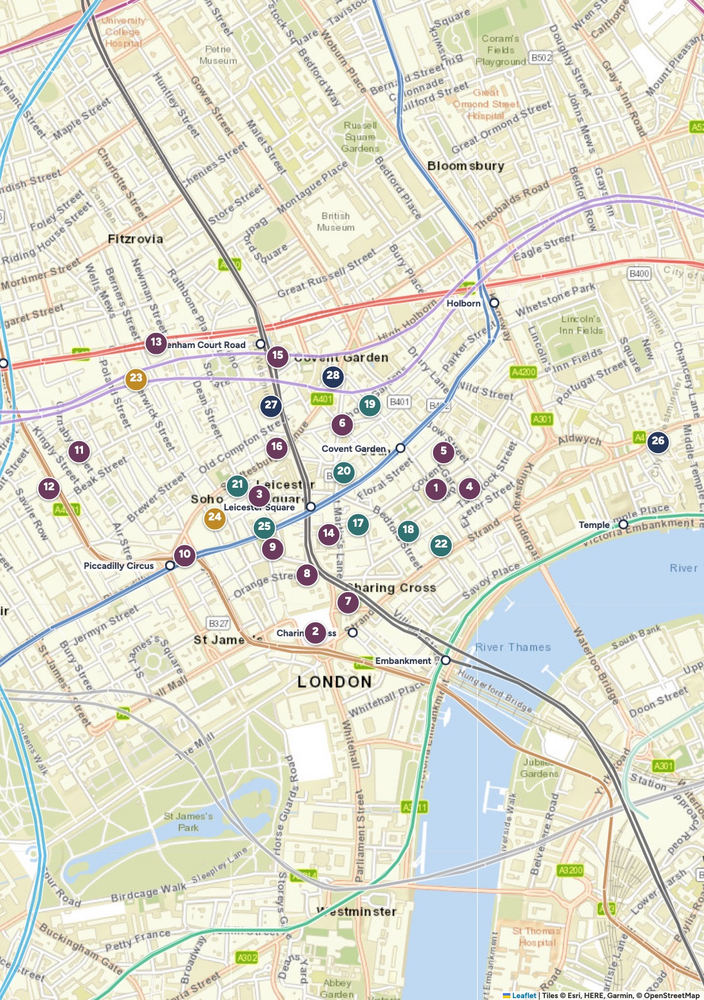
La mappa
Orientarsi
Scendendo dal ponte pedonale si arriva a Trafalgar Square, la porta del West End. A est c'è Covent Garden, con il mercato e i teatri; a nord Seven Dials e Soho, il quartiere dei locali; a ovest Leicester Square, Chinatown e Piccadilly Circus, da cui partono Regent Street e Carnaby Street. Tutto sta in un chilometro quadrato.
Per legge i grandi negozi inglesi la domenica aprono al massimo sei ore, di solito dalle 12 alle 18; i musei chiudono alle 18. Dopo le 17:30 restano aperti strade, luci, ristoranti, dolci e l'Outernet. Il sabato invece la National Portrait Gallery e Foyles restano aperti fino alle 21, Hamleys fino alle 21, il negozio LEGO fino alle 22.
Il Capodanno lunare cade sabato 6 febbraio 2027, inizio dell'anno della Capra. Londra lo festeggia domenica 7: di solito parata alle 10, palco a Trafalgar Square fino alle 18 circa con il finale verso le 17:30, banchi e danze del leone a Chinatown. È una festa enorme: folla, transenne, ristoranti cinesi pieni. Il programma esce a gennaio su lccauk.com.
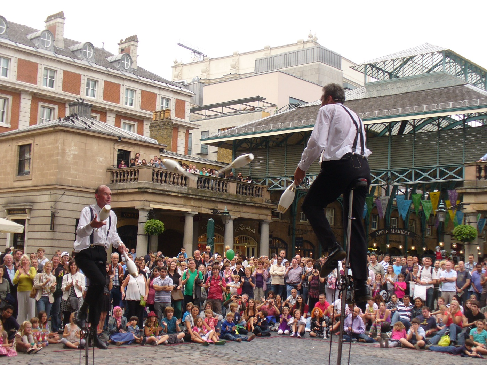
Top sight · 1
La prima piazza di Londra, un mercato coperto di ferro e vetro e gli artisti di strada più bravi della città.
Il nome viene dall'orto di un convento dei monaci di Westminster. Negli anni Trenta del Seicento l'architetto Inigo Jones ci disegnò la prima piazza all'italiana di Londra; per tre secoli è stata il mercato della frutta e dei fiori, fino al 1974, quando i grossisti si spostarono fuori città. Il mercato coperto del 1830 oggi è pieno di negozi, banchi di artigianato e caffè.
Sotto il portico della chiesa di St Paul's, la "chiesa degli attori", nel 1662 Samuel Pepys vide il primo spettacolo di Punch e Judy di cui si abbia notizia. Il portico che si vede dalla piazza è finto: l'ingresso vero della chiesa è sul retro. E qui comincia My Fair Lady: Eliza Doolittle vendeva fiori proprio in questa piazza.
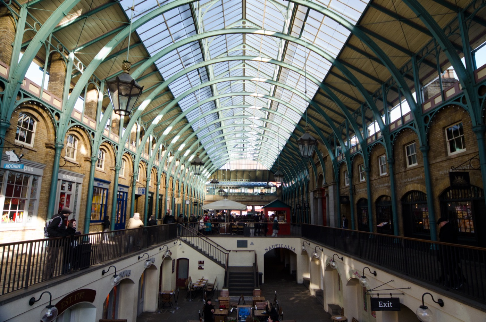
Gli artisti si esibiscono in due posti diversi. Davanti al portico di St Paul's, sulla West Piazza, ci sono i grandi cerchi di pubblico: acrobati, escapisti, comici; ogni mattina i posti della giornata vengono sorteggiati. Al piano inferiore del mercato, nel cortile, suonano musicisti di musica classica e cantanti lirici, che per esibirsi qui devono superare un'audizione davanti a una giuria.
Il cappello che gira alla fine dello spettacolo è l'unico compenso degli artisti: tenete qualche moneta o una carta contactless. Dal ballatoio del mercato si guardano i musicisti del cortile dall'alto, senza stare nella calca.
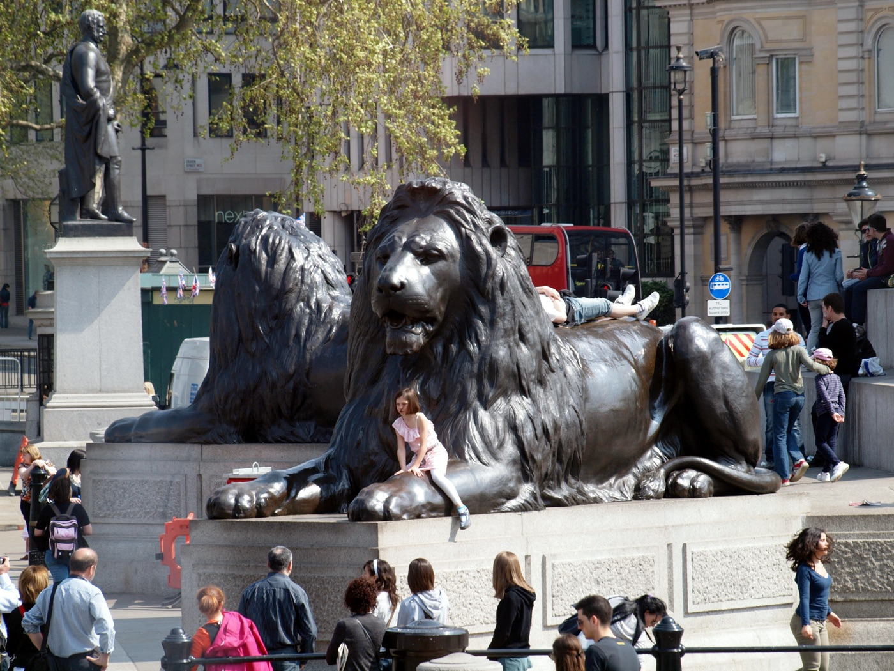
Top sight · 2
La piazza delle manifestazioni, dei festeggiamenti e dei piccioni, con una delle pinacoteche più ricche del mondo. Gratis.
Ricorda la battaglia di Trafalgar del 1805, in cui l'ammiraglio Nelson sconfisse la flotta di Napoleone e morì. Lui sta in cima alla colonna, a 52 metri; i quattro leoni di bronzo alla base sono di Edwin Landseer. Sul quarto piedistallo, rimasto vuoto per 150 anni, ogni due anni si espone un'opera d'arte nuova: fino al 2028 c'è Lady in Blue di Tschabalala Self, una londinese qualunque in abito blu.
Sul muro della terrazza nord sono incise le misure ufficiali inglesi: il pollice, il piede e la iarda. E nell'angolo sud-est c'è la "stazione di polizia più piccola di Londra", una cabina dentro un lampione.
La National Gallery occupa tutto il lato nord della piazza e raccoglie la pittura europea dal Duecento al Novecento. L'ingresso principale oggi è dalla Sainsbury Wing, all'angolo con Pall Mall. Alcune sale sono chiuse per lavori e alcuni quadri sono stati spostati: controllate la piantina prima di entrare.
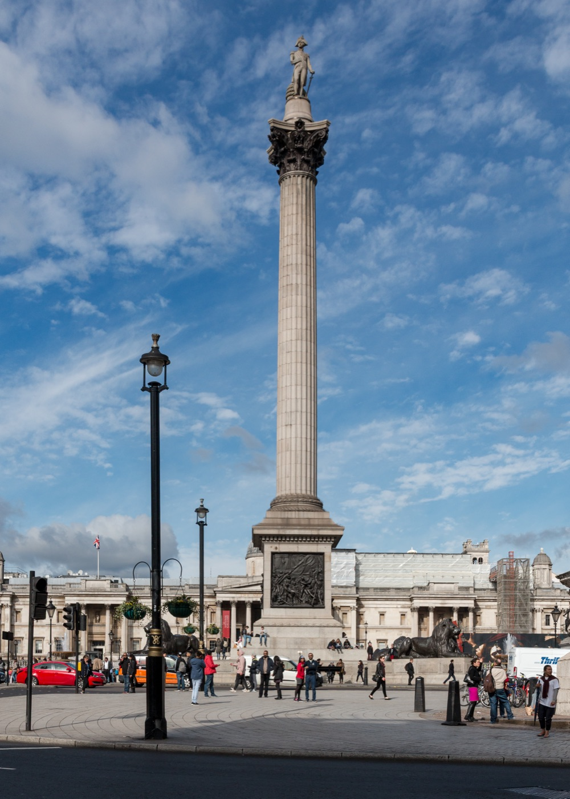

Top sight · 3
Tre strade di lanterne rosse, anatre laccate in vetrina e insegne bilingui, a due passi da Leicester Square.
La comunità cinese di Londra viveva in origine vicino al porto, a Limehouse; dopo la guerra si spostò qui, intorno a Gerrard Street, dove negli anni Sessanta aprirono i primi ristoranti. Oggi Chinatown è Gerrard Street, Lisle Street e un pezzo di Wardour Street, con porte decorate, leoni di pietra e cartelli stradali in inglese e in cinese.
Il calendario lunare comincia l'anno della Capra sabato 6 febbraio; i festeggiamenti ufficiali di Londra sono la domenica. Lo schema degli anni scorsi:
Il programma 2027 esce a gennaio su lccauk.com. La festa dura quindici giorni, fino alla Festa delle lanterne del 20 febbraio.
Quel giorno i ristoranti di Chinatown sono presi d'assalto e per otto persone è quasi impossibile trovare posto senza prenotazione: o si prenota con largo anticipo, o si cena altrove (Dishoom e Flat Iron sono a cinque minuti) e a Chinatown si passa solo per le lanterne e un dolce.
Nell'oroscopo cinese ogni anno ha un animale, in un ciclo di dodici. L'anno cinese comincia tra fine gennaio e metà febbraio: chi è nato a gennaio appartiene quasi sempre all'animale dell'anno prima. Un gioco per le ragazze: scoprire il proprio.
Da vedere
Bus a due piani, tram, carrozze della prima metropolitana del mondo (1863) e simulatori di guida. Il biglietto degli adulti vale un anno intero. I ragazzi entrano gratis, ma serve comunque il biglietto a orario online. Il negozio, con tutto quello che ha la mappa della metro stampata sopra, è la miniera dei souvenir.
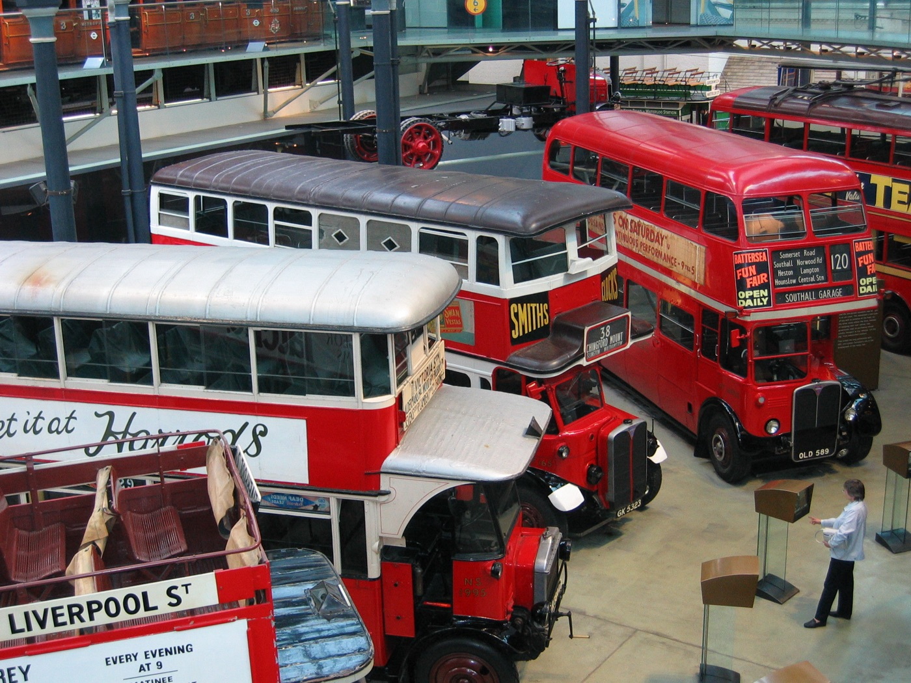
Senza biglietto si può entrare nei foyer, nella Paul Hamlyn Hall, una serra di ferro e vetro che era il vecchio mercato dei fiori, e salire sulla terrazza sopra il portico della piazza, con vista sui tetti del mercato. Di domenica, senza spettacolo, chiude alle 18.
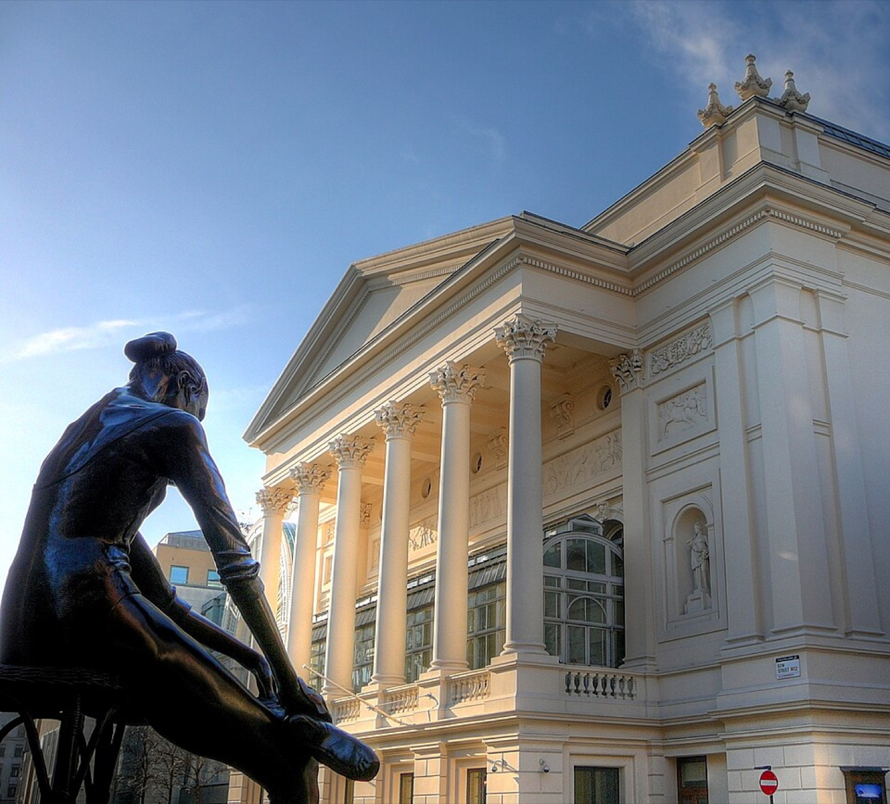
Nel 1693 Thomas Neale disegnò qui un incrocio a stella con una colonna in mezzo. Contate: le strade sono sette, ma le meridiane sulla colonna sono sei. La settima è la colonna stessa, che fa ombra sul selciato. Dietro l'angolo, Neal's Yard è un cortiletto di facciate coloratissime.
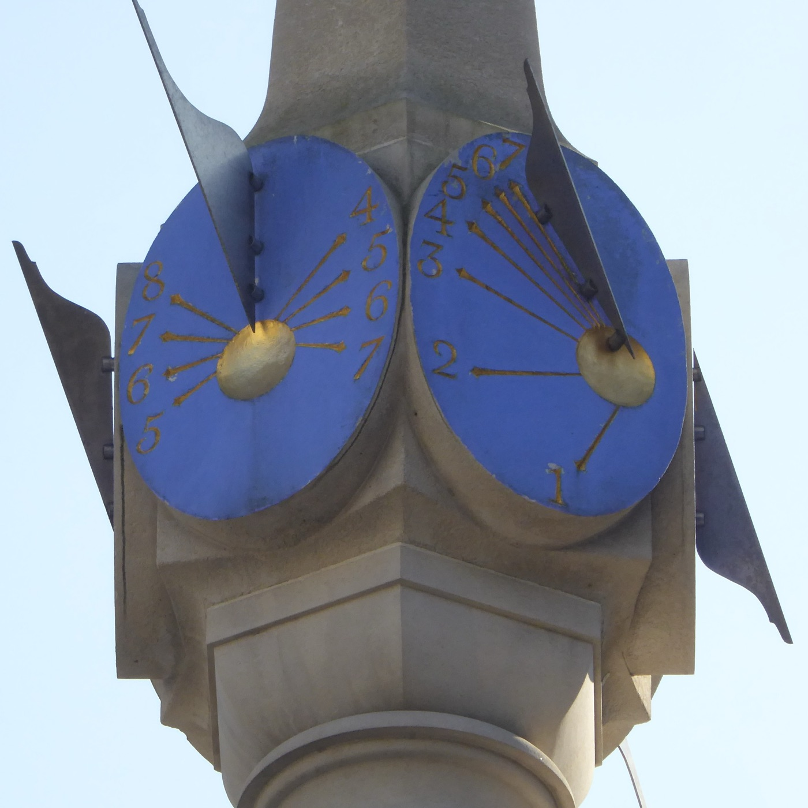
La chiesa con il campanile sulla piazza. Nella cripta c'è il Café in the Crypt, economico e suggestivo, tra le lapidi del pavimento: la domenica chiude alle 17, il sabato alle 19. Concerti a lume di candela soprattutto da giovedì a sabato alle 19:30.
Cinque secoli di ritratti di inglesi famosi: re e regine, scrittori, scienziati e, ai piani alti, pop star, sportivi e la famiglia reale di oggi. Il sabato sera è aperta fino alle 21 ed è molto più tranquilla.
La piazza dei cinema e delle prime dei film. Intorno c'è un percorso di statue di personaggi del cinema: Harry Potter sulla Nimbus 2000, Paddington, Mary Poppins, Mr Bean, Batman, Bugs Bunny e altri. Il negozio LEGO ha una carrozza della metro e un Big Ben di mattoncini a grandezza reale; M&M's London ha quattro piani.
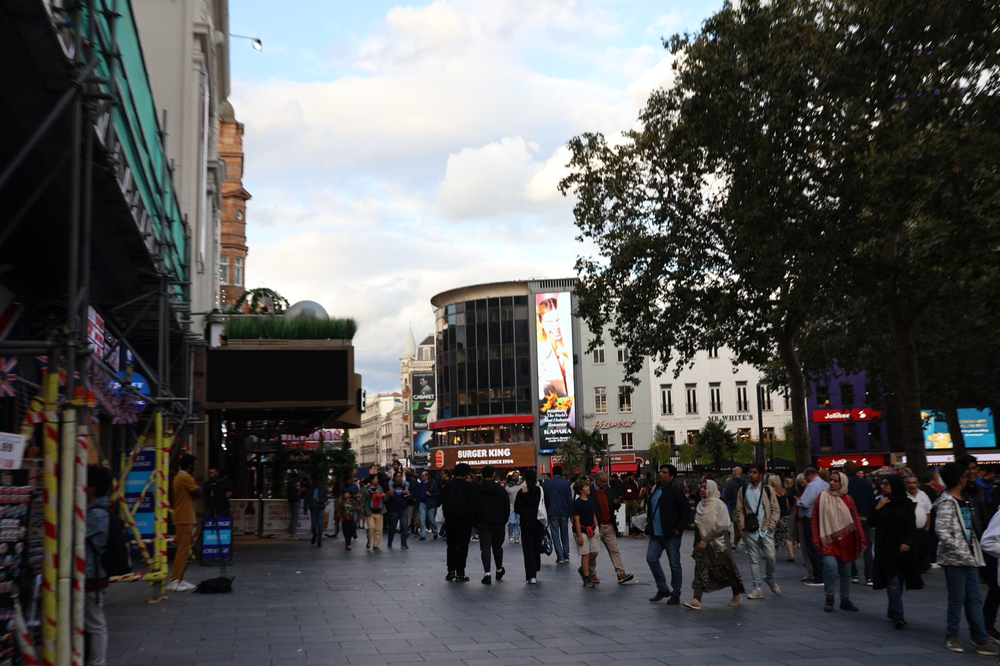
L'incrocio dei maxischermi, accesi giorno e notte. La statua che tutti chiamano Eros, del 1893, secondo il suo autore è suo fratello Anteros, l'amore disinteressato; ed è stata la prima statua al mondo fusa in alluminio.
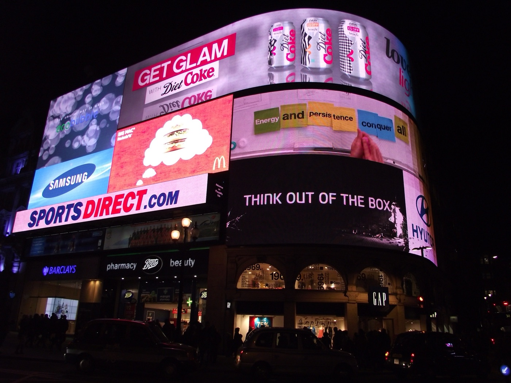
Carnaby Street, pedonale, era la via della moda degli anni Sessanta. A due passi c'è Liberty, un grande magazzino in stile Tudor del 1924 costruito con il legno di due navi da guerra.
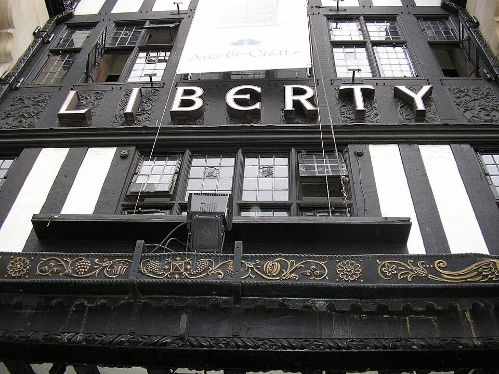
Aperto nel 1760, è considerato il negozio di giocattoli più antico del mondo: sette piani, con commessi che fanno dimostrazioni su ogni piano.
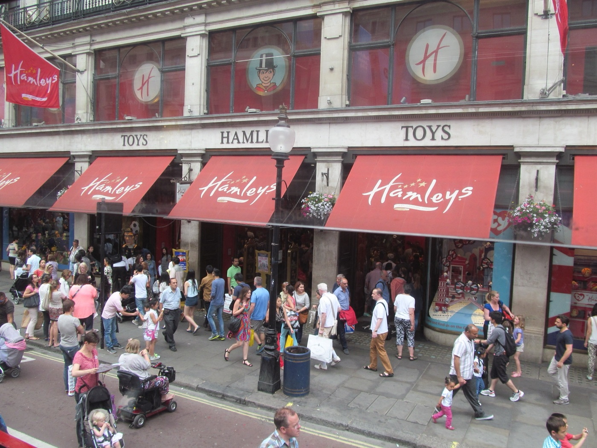
Lo studio grafico che ha disegnato gli oggetti di carta dei film di Harry Potter: la Mappa del Malandrino, la Gazzetta del Profeta, le lettere di Hogwarts. Mostra e negozio su più piani; nelle ore di punta l'ingresso è a orario.
Cecil Court è una fila di librerie antiquarie con vetrine vittoriane; Goodwin's Court un vicolo con finestre georgiane e veri lampioni a gas. I fan li indicano come ispirazione per Diagon Alley, ma J.K. Rowling ha detto che non si è ispirata a un posto reale. Goodwin's Court è abitata: entrate in silenzio, pochi alla volta.
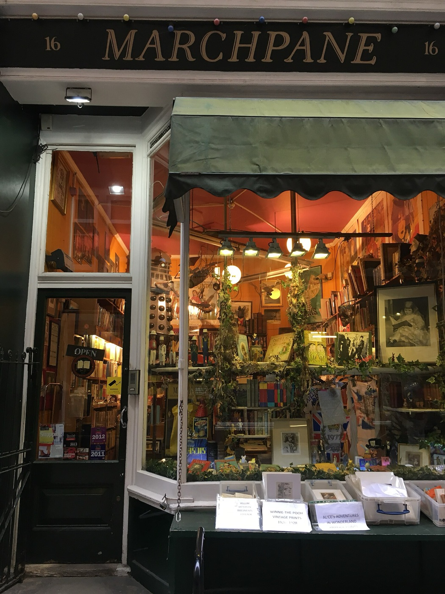
Un atrio di quattro piani con schermi LED dal pavimento al soffitto: si entra dentro le immagini. È una delle poche cose aperte la domenica sera.
Da ottobre 2026 lo spettacolo è in una sola parte: mar-sab alle 19, mer e sab anche alle 13, domenica solo alle 14:30. In generale i grandi musical (Il Re Leone, Wicked, Matilda) la domenica fanno solo il pomeriggio: per una serata a teatro il giorno giusto è il sabato.
Passeggiata
Circa 3 km · 2-3 ore con le soste · al tramonto, quando si accendono le luci
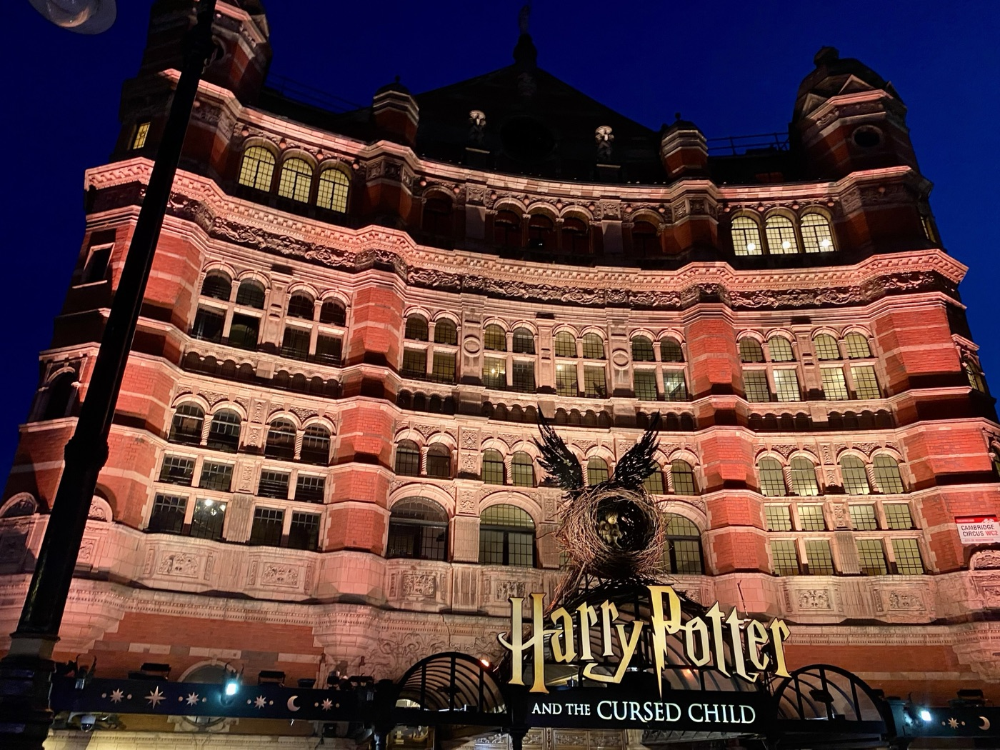
Mangiare
£ meno di £12 a testa · ££ £15-30 · £££ oltre £40. Orari della domenica.
Pie and mash, il piatto popolare londinese: purè, salsicce o pasticcio di carne e sugo. Locale piccolo: prenotate e arrivate entro le 19.
Una sola bistecca, tenera, a £15, con contorni da £3,50. Semplice, veloce, buona. Si prenota online.
Un food hall con una ventina di banchi: hamburger, pizza, formaggi, cucine del mondo. Non si prenota; i posti a sedere sono di chi arriva prima.
Lo stesso locale indiano di Shoreditch: dopo le 18 prenota solo per gruppi da 6 in su, quindi per noi va bene. Si prenota fino a 4 mesi prima.
Cucina cantonese e dim sum, abituato ai gruppi grandi. Per il Capodanno cinese va prenotato molto prima (020 7734 1073).
Il ristorante più antico di Londra, dal 1798: selvaggina, pie e roast in sale piene di quadri. Per un'occasione speciale.
Dolci, spuntini e shopping
Panini al vapore ripieni (Bun House, senza prenotazione) e corn dog coreani (Bunsik, da asporto): lo spuntino di Chinatown.
Cookie enormi e gelato soft. C'è spesso la fila.
Waffle all'uovo di Hong Kong, a bolle, ripieni di gelato e frutta. Code anche lunghe.
Thomas Twining comprò questa bottega nel 1706: è sullo stesso posto da oltre trecento anni. Si assaggiano gratis alcuni tè. Negozio stretto: pochi alla volta.
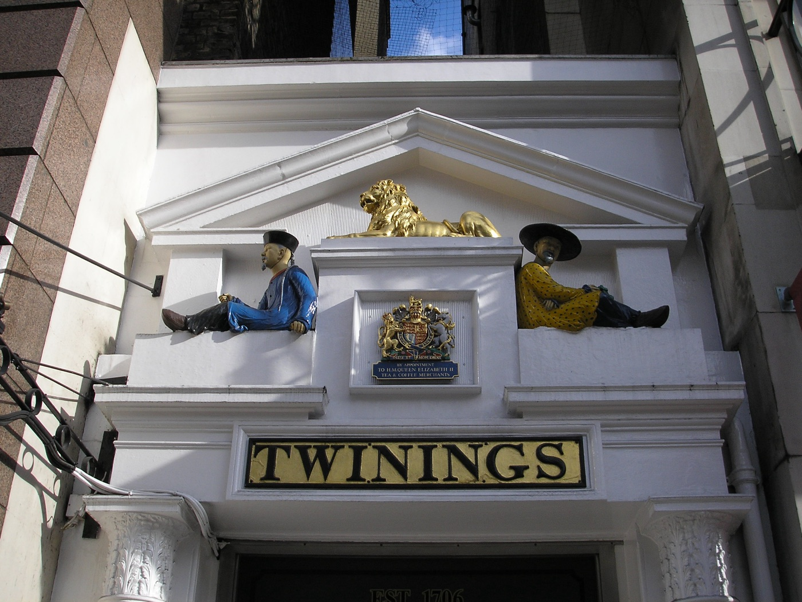
Foyles è una delle librerie più grandi di Londra, con un ricco reparto per ragazzi. Forbidden Planet è il paradiso di fumetti, manga e gadget di film e serie.
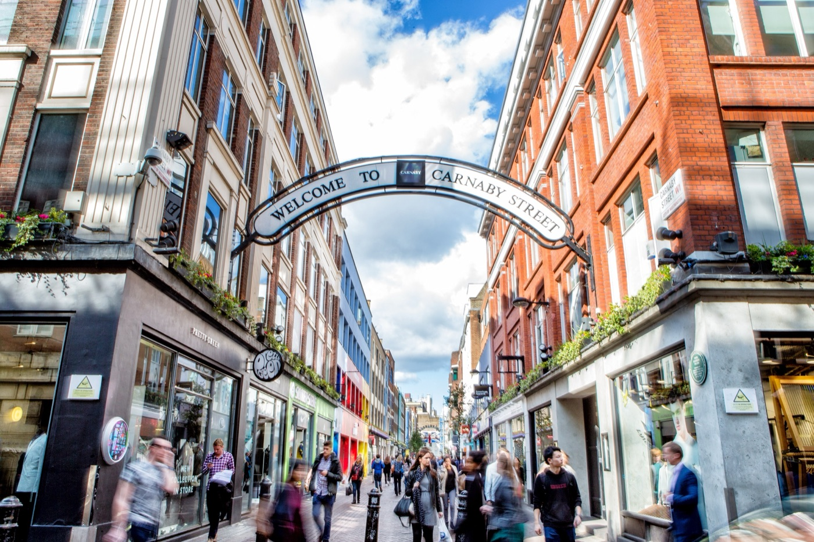
Il consiglio di TikTok e prima di partire
L'Outernet, gratis, e il negozio LEGO più grande del mondo; a Chinatown i corn dog di Bunsik e i panini di Bun House; il Seven Dials Market per mangiare in tanti; i cookie di Crème a Soho. Da @volga_londonstories, @akirediaries e @andreaelaura.
Quasi tutto è gratis: piazze, artisti di strada, National Gallery, Portrait Gallery, Outernet, MinaLima. A pagamento solo il London Transport Museum (£135 per i 5 adulti) e l'eventuale teatro (da circa £30 a testa).
Crediti fotografici
Foto da Wikimedia Commons, pubblicate con licenze Creative Commons o in pubblico dominio. Mappe: Esri, HERE, Garmin e i contributori di OpenStreetMap. Linee della metro: OpenStreetMap.
Appunti